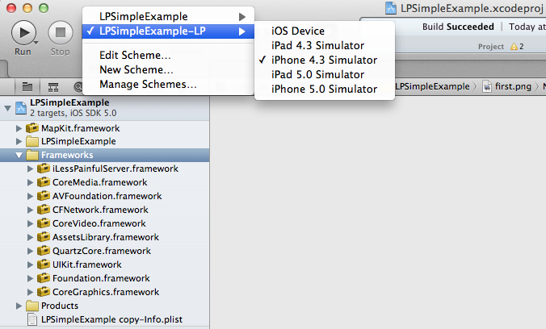

LessPainful-ios-client Copyright (c) Karl Krukow. All rights reserved. The use and distribution terms for this software are covered by the Eclipse Public License 1.0 (http://opensource.org/licenses/eclipse-1.0.php) which can be found in the file epl-v10.html at the root of this distribution. By using this software in any fashion, you are agreeing to be bound by the terms of this license. You must not remove this notice, or any other, from this software.
After completing this guide you will be able to run tests locally against the iOS Simulator. You can also interactively explore your applications using the Ruby irb console.
Finally you will be able to build your application using special "test target" and run that on real iOS devices via the LessPainful service.
This guide takes approximately 10-15 minutes to complete.
You need to have Ruby 1.9.2+ installed, and a recent RubyGems installation. I use RVM or rbenv to manage my Ruby installations.
For RVM, see:
For rbenv, see: https://github.com/sstephenson/rbenv
The rbenv project is probably the simpler of the two.
You also need XCode 4.x. This guide aims at XCode 4.2, but should also work for XCode versions >= 4.0.
Make sure ruby and ruby gems is on your path.
krukow:~/examples$ ruby -v
ruby 1.9.2p290 (2011-07-09 revision 32553) [x86_64-darwin11.1.0]
krukow:~/examples$ gem -v
1.8.10
Install ilesspainfulclient-cucumber gem version 0.1.3:
krukow:~/examples$ gem install ilesspainfulclient-cucumber
Fetching: ilesspainfulclient-cucumber-0.1.3.gem (100%)
Successfully installed ilesspainfulclient-cucumber-0.1.3
1 gem installed
Download the sample app from github:
Let's say you've put the sample app in a into a working
directory, examples.
Open the XCode project: LPSimpleExample.xcodeproj using XCode.
Select the LPSimpleExample-LP and iPhone Simulator 4.3 or 5.0 scheme under schemes.

CMD-R to run. Look at the log output and verify that you see:
LPSimpleExample[11298:13703] HTTPServer: Started HTTP server on port 37265
If that message is there, you're good to go.
The easy way is to just run one of the irb scripts: irb_ios4.sh or
irb_ios5.sh.
From this console you can explore your application interactively.
You can query, touch, scroll, etc from the irb session. For example, notice that the sample app has a button: "Login".
If you're running the iOS5 iPhone simulator run irb_ios5.sh otherwise: irb_ios4.sh.
Now try this from the irb:
ruby-1.9.2-p290 :003 > query("button")
You should see something like this:
=> ["<UIRoundedRectButton: 0x6567e00; frame = (109 215; 73 37); opaque = NO; autoresize = RM+BM; layer = <CALayer: 0x6567ef0>>"]
The query function takes a string query as an argument. They query argument is similar to a css selector, for example we can do:
ruby-1.9.2-p290 :009 > query("button label")
=> ["<UIButtonLabel: 0x6624f40; frame = (16 9; 40 19); text = 'Login'; clipsToBounds = YES; opaque = NO; userInteractionEnabled = NO; layer = <CALayer: 0x6645ec0>>"]
It may also take parameters that are mapped to Objective-C selectors on the found object.
ruby-1.9.2-p290 :010 > query("button label", :text)
=> ["Login"]
Anything that can be found using query can also be touched. Try this while you watch the iOS Simulator:
ruby-1.9.2-p290 :011 > touch("button")
Notice that the button is touched (turns blue), although this button doesn't do anything.
You can also touch the tab bars:
ruby-1.9.2-p290 :016 > touch("tabBarButton index:1")
The filter: index:1 means that it is the second tab-bar button that should be touched.
In general UI views are found using accesibility labels. To use those in the simulator they must be enabled.
General > Accessibility > Accessibility Inspector : On.In your irb session try this:
ruby-1.9.2-p290 :025 > query("view marked:'switch'")
This command finds a view with accessibility label 'switch' (not that we use single quotes to delimit the accessibility label.
In general, many views have accessibility labels that "make sense". For example the tab bar buttons have accessibility labels:
ruby-1.9.2-p290 :029 > touch("tabBarButton marked:'second'")
To control accessibility labels on your views use:
isAccessibilityElement = YES, and accessibilityLabel = @"somelbl"; This can be done in interface builder or programmatically:
(void) viewDidLoad {
[super viewDidLoad];
self.uiswitch.isAccessibilityElement = YES;
self.uiswitch.accessibilityLabel = @"switch";
}
Surprisingly, these commands are enough to navigate fairly many iOS apps. However, there are many more commands available. Consult the file documentation/GherkinAPI.txt for examples of how to use these.
Now you're ready to work with your app.
You should download the LessPainful-ios-server project from Github:
Read the README from that project, and follow the instructions on
how to run LessPainful on your project.